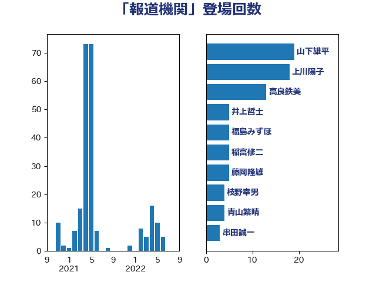

単語「報道機関」

| 山下雄平 | 自由民主党 | 19 回 |
| 上川陽子 | 自由民主党 | 18 回 |
| 高良鉄美 | 無所属 | 13 回 |
| 井上哲士 | 日本共産党 | 5 回 |
| 福島みずほ | 社会民主党 | 5 回 |
| 稲富修二 | 立憲民主党 | 5 回 |
| 藤岡隆雄 | 立憲民主党 | 5 回 |
| 枝野幸男 | 立憲民主党 | 4 回 |
| 青山繁晴 | 自由民主党 | 4 回 |
| 串田誠一 | 日本維新の会 | 3 回 |
| 北神圭朗 | 無所属 | 3 回 |
| 大西健介 | 立憲民主党 | 3 回 |
| 小西洋之 | 立憲民主党 | 3 回 |
| 高村正大 | 自由民主党 | 3 回 |
| 伊藤岳 | 日本共産党 | 2 回 |
| 山井和則 | 立憲民主党 | 2 回 |
| 岡本三成 | 公明党 | 2 回 |
| 川田龍平 | 立憲民主党 | 2 回 |
| 東徹 | 日本維新の会 | 2 回 |
| 梶山弘志 | 自由民主党 | 2 回 |
| 浅田均 | 日本維新の会 | 2 回 |
| 清水貴之 | 日本維新の会 | 2 回 |
| 田村憲久 | 自由民主党 | 2 回 |
| 空本誠喜 | 日本維新の会 | 2 回 |
| 茂木敏充 | 自由民主党 | 2 回 |
| 中谷一馬 | 立憲民主党 | 1 回 |
| 丸川珠代 | 自由民主党 | 1 回 |
| 加田裕之 | 自由民主党 | 1 回 |
| 古川禎久 | 自由民主党 | 1 回 |
| 吉田とも代 | 日本維新の会 | 1 回 |
| 嘉田由紀子 | 無所属 | 1 回 |
| 堀井巌 | 自由民主党 | 1 回 |
| 大塚耕平 | 国民民主党 | 1 回 |
| 大岡敏孝 | 自由民主党 | 1 回 |
| 太田房江 | 自由民主党 | 1 回 |
| 奥野総一郎 | 立憲民主党 | 1 回 |
| 室井邦彦 | 日本維新の会 | 1 回 |
| 寺田学 | 立憲民主党 | 1 回 |
| 寺田静 | 無所属 | 1 回 |
| 小野寺五典 | 自由民主党 | 1 回 |
| 山下芳生 | 日本共産党 | 1 回 |
| 山岡達丸 | 立憲民主党 | 1 回 |
| 岩谷良平 | 日本維新の会 | 1 回 |
| 川合孝典 | 国民民主党 | 1 回 |
| 後藤茂之 | 自由民主党 | 1 回 |
| 斉藤鉄夫 | 公明党 | 1 回 |
| 新藤義孝 | 自由民主党 | 1 回 |
| 有村治子 | 自由民主党 | 1 回 |
| 杉尾秀哉 | 立憲民主党 | 1 回 |
| 柳ヶ瀬裕文 | 日本維新の会 | 1 回 |
| 森本真治 | 立憲民主党 | 1 回 |
| 武田良太 | 自由民主党 | 1 回 |
| 渡辺周 | 立憲民主党 | 1 回 |
| 田村智子 | 日本共産党 | 1 回 |
| 笹川博義 | 自由民主党 | 1 回 |
| 芳賀道也 | 国民民主党 | 1 回 |
| 菅義偉 | 自由民主党 | 1 回 |
| 赤羽一嘉 | 公明党 | 1 回 |
| 金子恵美 | 立憲民主党 | 1 回 |
| 長妻昭 | 立憲民主党 | 1 回 |
| 階猛 | 立憲民主党 | 1 回 |
| 高橋千鶴子 | 日本共産党 | 1 回 |